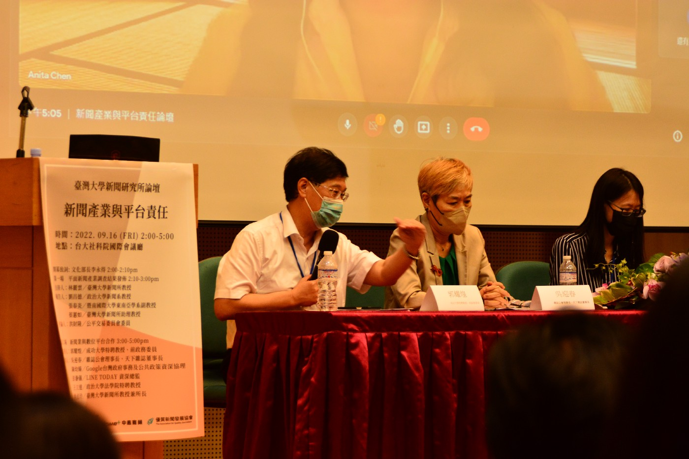

面對新聞業營收大幅下滑，使用新聞內容的數位平台該如何負責？台大新聞所所長洪貞玲提出四種路徑，包括市場力與議價模式、著作鄰接權模式、設置基金或是課徵稅金等模式，呼籲平台業者與新聞業界真誠溝通，協商出共識方案。雜誌公會理事長、天下雜誌董事長吳迎春也呼籲，數位平台應展現誠意，政府應協助新聞業與平台談判。
文字／劉騏瑋
成功大學特聘教授郭耀煌與雜誌公會理事長吳迎春發表對產業的觀察。（攝影／歐穎慈）
9月16日由臺大新聞所主辦的論壇中，新聞業界與數位平台業者首度公開討論「新聞業與平台合作」議題。主持人成功大學特聘教授郭耀煌認為，數位浪潮下，面對變動的產業生態及非線性的網路傳播型態，媒體與平台業者應在競爭中尋求合作。針對合理的新聞議價，新聞業者表示支持；數位平台則提出與新聞業的不同合作方式，在授權付費之外，有廣告分潤、新聞導流、協助數位轉型等作法。
LINE TODAY資深總監彭瀞儀表示，該公司與新聞業界有三種合作模式，包括授權協議、資源交換或新聞導流等多元合作，目前與超過600家媒體合作，所刊登的新聞皆為合法取得授權之內容。對於演算法及流量影響新聞品質，彭瀞儀強調，LINE TODAY的新聞編排，並非以流量取勝，而是由專業編輯決定，「身為平台方，我們也希望能提供讀者多元優質的內容」。
Google台灣政府事務及公共政策資深協理陳幼臻則指出，該公司思考與新聞業的關係，在數位環境中不只是要給魚吃，更重要的是如何釣魚的能力。Google近年相當注重與利益關係人之間的溝通，「在聆聽在地媒體業者的需求後，我們透過工作坊與比賽，提升媒體從業人員的數位敘事能力與對數位業務的信心。」陳幼臻也強調，平台近年來與台灣政府、公民社會合作對抗假訊息，目的是協助新聞資訊環境的健全。
LINE TODAY資深總監彭瀞儀以平台業者角度發表看法。（攝影／歐穎慈）
雜誌公會理事長吳迎春指出，業界受到澳洲立法強制新聞議價之後深受啟發，而發動台灣第一次全面性的產業調查，希望未來定期發表產業報告，累積足夠的產業數據。吳迎春也觀察到，參與議價議題討論的成員多是業者與學者，但總是缺少了讀者的聲音，「我們不禁想問：讀者是否還在意新聞產業？愈來愈多人只看平台推播的新聞，甚至對平台的信任度比媒體更高。」面臨如此局面，媒體也應提升自己的競爭力，才能與其他平台業者、網路資訊傳播者抗衡。
政治大學法學院特聘教授王立達支持立法進行媒體議價，並提出新聞議價草案內容，透過明確界定新聞媒體、強制議價措施以及政府介入，可以導正平台與新聞業的權力不平等。但他也強調，此議題牽涉價格決定因素，故法律適合扮演的角色應為「助攻者」，促進媒體與平台業者的協商。
洪貞玲指出，除了思考新聞議價之外，應趁此機會構思建全新聞業的政策，除了新聞議價與著作權協商兩種付費模式之外，國際之間盛行的基金模式，以及從財政角度思考的課稅模式，皆可做為數位平台將其營收回饋協助新聞業的可能途徑。此外，若要在平台責任與新聞發展間找到平衡，她認為除了充分的產業調查、政府的積極介入，公民社會的參與也格外重要。
臺大新聞所教授兼所長洪貞玲延伸探討四種議價模式的不同考量。（攝影／歐穎慈）
在最後的問答時間中，與會者除了針對不同媒體形式議價的現況提出意見外，也質疑議價法雖期待能讓媒體拿回更多收益，但是否會因此導致大小眾媒體收益之間的不平衡？吳迎春認為，就算規模小眾，但若能擁有一群精準客群，也有可能拿到高報酬，「媒體不能光有理想，必須強化自身能力。除了在內容上做出價值與吸引力，也要了解數位轉型，進而在數位浪潮中生存。」
與會者針對本論壇提出產業結構相關問題。（攝影／歐穎慈）
📖延伸閱讀：
【新聞產業與平台責任論壇（一）】首度平面媒體產業大調查 報業十年營收砍半第四權角色面臨挑戰 (https://medium.com/@ntujour2022/新聞產業與平台責任論壇-首度平面媒體產業大調查-報業十年營收砍半第四權角色面臨挑戰-f4f870b66040)
【新聞產業與平台責任論壇（二）】新聞業攸關民主 李永得支持平台為新聞付費 郭耀煌呼籲政府積極推動新聞媒體轉型策略 (https://medium.com/@ntujour2022/新聞產業與平台責任論壇-新聞業攸關民主-李永得支持平台為新聞付費-郭耀煌呼籲政府積極推動新聞媒體轉型策略-e8f12e20e894)
面對新聞業營收大幅下滑，使用新聞內容的數位平台該如何負責？台大新聞所所長洪貞玲提出四種路徑，包括市場力與議價模式、著作鄰接權模式、設置基金或是課徵稅金等模式，呼籲平台業者與新聞業界真誠溝通，協商出共識方案。雜誌公會理事長、天下雜誌董事長吳迎春也呼籲，數位平台應展現誠意，政府應協助新聞業與平台談判。
9月16日由臺大新聞所主辦的論壇中，新聞業界與數位平台業者首度公開討論「新聞業與平台合作」議題。主持人成功大學特聘教授郭耀煌認為，數位浪潮下，面對變動的產業生態及非線性的網路傳播型態，媒體與平台業者應在競爭中尋求合作。針對合理的新聞議價，新聞業者表示支持；數位平台則提出與新聞業的不同合作方式，在授權付費之外，有廣告分潤、新聞導流、協助數位轉型等作法。
LINE TODAY資深總監彭瀞儀表示，該公司與新聞業界有三種合作模式，包括授權協議、資源交換或新聞導流等多元合作，目前與超過600家媒體合作，所刊登的新聞皆為合法取得授權之內容。對於演算法及流量影響新聞品質，彭瀞儀強調，LINE TODAY的新聞編排，並非以流量取勝，而是由專業編輯決定，「身為平台方，我們也希望能提供讀者多元優質的內容」。
Google台灣政府事務及公共政策資深協理陳幼臻則指出，該公司思考與新聞業的關係，在數位環境中不只是要給魚吃，更重要的是如何釣魚的能力。Google近年相當注重與利益關係人之間的溝通，「在聆聽在地媒體業者的需求後，我們透過工作坊與比賽，提升媒體從業人員的數位敘事能力與對數位業務的信心。」陳幼臻也強調，平台近年來與台灣政府、公民社會合作對抗假訊息，目的是協助新聞資訊環境的健全。
雜誌公會理事長吳迎春指出，業界受到澳洲立法強制新聞議價之後深受啟發，而發動台灣第一次全面性的產業調查，希望未來定期發表產業報告，累積足夠的產業數據。吳迎春也觀察到，參與議價議題討論的成員多是業者與學者，但總是缺少了讀者的聲音，「我們不禁想問：讀者是否還在意新聞產業？愈來愈多人只看平台推播的新聞，甚至對平台的信任度比媒體更高。」面臨如此局面，媒體也應提升自己的競爭力，才能與其他平台業者、網路資訊傳播者抗衡。
政治大學法學院特聘教授王立達支持立法進行媒體議價，並提出新聞議價草案內容，透過明確界定新聞媒體、強制議價措施以及政府介入，可以導正平台與新聞業的權力不平等。但他也強調，此議題牽涉價格決定因素，故法律適合扮演的角色應為「助攻者」，促進媒體與平台業者的協商。
洪貞玲指出，除了思考新聞議價之外，應趁此機會構思建全新聞業的政策，除了新聞議價與著作權協商兩種付費模式之外，國際之間盛行的基金模式，以及從財政角度思考的課稅模式，皆可做為數位平台將其營收回饋協助新聞業的可能途徑。此外，若要在平台責任與新聞發展間找到平衡，她認為除了充分的產業調查、政府的積極介入，公民社會的參與也格外重要。
在最後的問答時間中，與會者除了針對不同媒體形式議價的現況提出意見外，也質疑議價法雖期待能讓媒體拿回更多收益，但是否會因此導致大小眾媒體收益之間的不平衡？吳迎春認為，就算規模小眾，但若能擁有一群精準客群，也有可能拿到高報酬，「媒體不能光有理想，必須強化自身能力。除了在內容上做出價值與吸引力，也要了解數位轉型，進而在數位浪潮中生存。」
【新聞產業與平台責任論壇（一）】首度平面媒體產業大調查 報業十年營收砍半第四權角色面臨挑戰 (https://medium.com/@ntujour2022/新聞產業與平台責任論壇-首度平面媒體產業大調查-報業十年營收砍半第四權角色面臨挑戰-f4f870b66040)